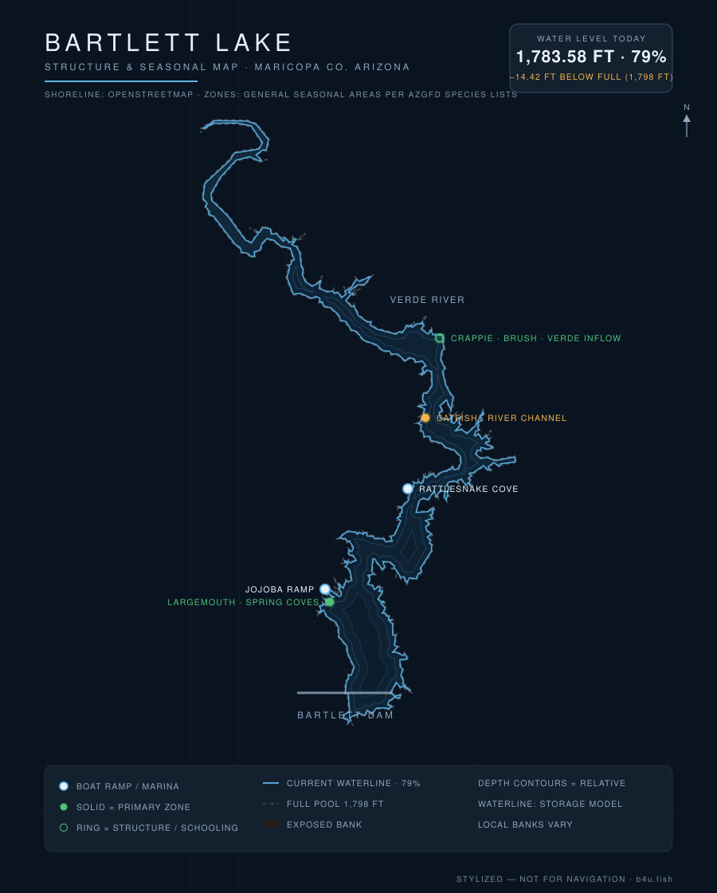

Bartlett is the Valley's premier largemouth lake — a Verde River reservoir with long, fishy shoreline and a reputation for numbers. Here's what to know before you launch — plus live conditions updated every day.

Waterline reflects the latest level reading (stylized — not for navigation). Fish zones are general seasonal areas, not exact spots, compiled from AZGFD species lists & lake guides and published Arizona fishing reports. Water data: SRP/DWR, CAP, USACE.
Current water level, percent-full, weather, solunar bite windows, and a daily fishing score for Bartlett are tracked on the b4u.fish dashboard.
The only major lake on the Verde River side of the system, Bartlett sits northeast of Carefree behind Bartlett Dam. Its sprawling, brushy shoreline and warm water make it one of the most productive largemouth fisheries near Phoenix, with strong catfish action to match. Levels are SRP-managed and swing with Verde runoff and demand.
Prime time. Bass flood the shallows to spawn around brush and coves — often the year's best numbers.
Fish dawn and dusk and target shade and deeper structure midday; catfish turn on after dark. The daily score on b4u.fish flags the workable windows.
Cooling water keeps bass shallow and active longer than most lakes; crappie group on structure.
The b4u.fish dashboard combines moon phase, solunar major/minor windows, wind, cloud cover, water temperature, and barometric stability into a single daily score — so you can see at a glance whether today is worth the gas.
From central Phoenix or Scottsdale, take Cave Creek Road to Bartlett Dam Road and follow it east to the lake — figure an hour to 90 minutes depending on where you start. The lake is in Tonto National Forest, so a day-use fee or Tonto Pass is required.
Full pool is 1,798 ft. Live elevation and percent-full are on the b4u.fish dashboard, from the SRP/DWR daily report.
Largemouth bass, flathead and channel catfish, crappie, sunfish, and white bass.
The Jojoba multi-lane ramp, Rattlesnake Cove, and the Bartlett Lake Marina — see the dashboard for status.
Cave Creek Road to Bartlett Dam Road, then east to the lake — about an hour to 90 minutes.